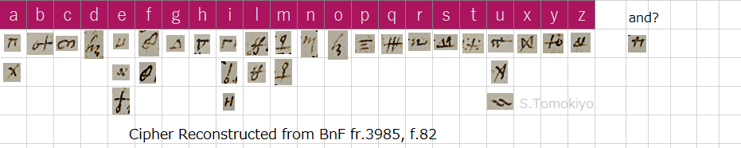
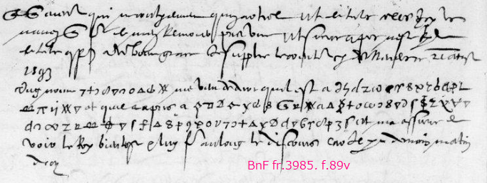

Mémoires de la Ligue in the French Archives (BnF fr.3974-3995) contains papers related to the Catholic League during the French Wars of Religion. The present article lists materials related to cipher therein and includes some reconstructed ciphers. The last volume (BnF fr.3995) is a collection of original (or reconstructed) ciphers ("the Nevers collection" herein), for which see another article.
Jump to: fr3974, fr3975, fr3976, fr3977, fr3978, fr3979, fr3980, fr3981, fr3982, fr3983, fr3984, fr3985, fr3986, fr3987, fr3988, fr3989, fr3990, fr3991, fr3992, fr3993, fr3994, fr3995.
(Gallica)
no.28 (fol.83) Camillo Volta to Duke of Nevers, Rome, 8 October 1585 (cipher appears on fol.87)
Uses, apparently, cipher no.13 of the Nevers collection.
Information on BnF does not mention "chiffre."
(Gallica)
no.25 (fol.52) Cardinals of Bourbon and Guise to Duke of Nevers, 20 April 1588
no.27 (fol.56) Information for Duke of Nevers, 24 April 1588
no.29 (fol.60) Cardinal de Guise to Duke of Nevers, 26 April 1588
no.32 (fol.66) Cardinals de Bourbon and Guise to Duke of Nevers, 29 April 1588
The cipher used in these can be reconstructed as follows (called "Cardinals Bourbon/Guise-Nevers Cipher" for convenience).

no.30 (fol.62) Information for Duke of Nevers, 29 April 1588
no.70 (fol.131), no.71 (fol.133), no.74 (fol.139) Reports, June 1588 (soon after the Day of the Barricades (Wikipedia))
These use cipher no.7 of the Nevers collection. No.30, undeciphered, is found to read "a la ruyne de D. d'Espernon assiste" etc.
Letters in this volume are described in another article. Some ciphers deciphered by Thomas Phelippes.
Not yet available on Gallica.
(Gallica)
no.42 (fol.92) Duke of Mantua to Duke of Nevers, "Malceseno sul' lago di Garda" (Wikipedia), 17 September 1590
Undeciphered but can be read with a key reconstructed from other letters in 1593 (see another article).
A cipher used in a letter of Alessandro Farnese, Duke of Parma, to Filippo Sega (Philippe Sega), Bishop of Piacenza of 25 January 1591 and another cipher used in letters between the Duke of Mayenne and Sega in the same month are reconstructed in another article, "How I reconstructed a Spanish cipher from 1591" (Cryptologia).
no.10 (fol.27) Duke of Parma to Philip II, Lion Santel, 18 January
In Spanish. Decipherment only.
no.67 (fol.141) Chevalier de Diou to Cardinal of Piacenza, Rome, 21 March 1592
Decipherment only.
no.69 (fol.145) don Gregorio de Miranda to Bernardino de Mendoza, 5 April 1592
In Spanish. The cipher can be reconstructed as follows.

no.95 (fol.206) A letter from Rome, 24 June 1592
In Italian. Decipherment only.
(Gallica)
no.22 (fol.46) A. Pelissier to Pierre Jeannin (Wikipedia), Burgos, 13 September 1592
Nine pages long. Mostly in cipher, only partially deciphered.
no.45 (fol.111; clean decipherment on fol.115) A. Pelissier to "monseigneur", Madrid, 27 October 1592
no.46 (fol.113; clean decipherment in 2nd para. on fol.115) A. Pelissier to Pierre Jeannin, 27 October 1592
The cipher used in these can be reconstructed as follows.
no.23 (fol.51) Charles Gonzague Cleves to Duke of Nevers, 14 September 1592
This uses cipher no.70 of the Nevers collection.
no.41 (fol.97) Commandeur de Diou to Pierre Jeannin (Wikipedia), councillor to the Duke of Mayenne and President of the Parlement of Dijon, 27 October 1592
no.42 (fol.101) Anne de Perusse d'Escars de Givry, Bishop of Lizieux (Wikipedia), to "monseigneur", Rome, 27 October 1592
no.55 (fol.124) Commandeur de Diou to Duke of Mayenne, Rome, 12 November 1592
These use a polyphonic substitution cipher described in another article.
no.70 (fol.157) Duke of Parma to Philip II, Arras, 23 November 1592
In Spanish. Decipherment only.
This appears to be an incomplete version of the interlined decipherment of f.89 in BnF fr.3641 (in "1592 syllabic numerical cipher", catalogued in another article).
no.80 (fol.170) Don Diego de Ibarra [Desbarres] to Philip II, Paris, 1 December 1592
In Spanish. Decipherment only.
This appears to be a cleaned/corrected version of the interlined decipherment of f.111 in BnF fr.3641 (in "1592 syllabic numerical cipher", catalogued in another article).
no.81 (fol.170v, from line 7)
In Spanish. Decipherment only. This appears to be a more complete version of no.70 above.
no.82 (fol.171v, last para. to the middle of fol.174v) Ibarra to Philip II, Paris, 25 November 1592
In Spanish. Decipherment only. This appears to be another version of f.95 in BnF fr.3641 (in Cp.34, catalogued in another article).
no.83 (fol.174v, from the middle) Ibarra to don Juan de Idiaques, Paris, 26 November 1592
In Spanish. Decipherment only. This appears to be a cleaned/corrected version of the interlined decipherment of the paragraphs in cipher of f.99 in BnF fr.3641 (in Cp.34, catalogued in another article).
no.84 (fol.175v) Ibarra to Doria, Paris, 26 November 1592
In Spanish. Decipherment only. This appears to be a cleaned/corrected version of the interlined decipherment of fol.103 in BnF fr.3641 (in "1592 Doria cipher", catalogued in another article).
no.94 (fol.189) Ibarra to Philip II, Paris, 8 December 1592
In Spanish.
This uses cipher no.54 of the Nevers collection (called "1592 syllabic numerical cipher" above).
(Gallica)
no.3, no.4 (fol.11, fol.13) Jean de Vyvonne, marquis de Pisany, to Duke of Nevers, Verone, 13 January 1593
no.81 (fol.169) Jean de Vyvonne, marquis de Pisany, to Duke of Nevers, Padua, 23 March 1593
These use cipher no.46 of the Nevers collection.
no.11 (fol.26) Lebel, ambassador of Savoy, to Duke of Savoy, Paris, 17 January 1593
no.62 (fol.130) Lebel to Duke of Savoy, Paris, 10 March 1593
no.80 (fol.166) Lebel to Duke of Savoy, Paris, 13 March 1593
no.100 (fol.194) Lebel to Duke of Savoy, Paris, 27 March 1593
The reconstructed cipher used in these is presented in another article.
no.19 (fol.40) Charles Barberini to Philip Sega, Bishop of Piacenza, 1593
no.20 (fol.43) An unsigned note, 1593
no.40 (fol.83) Duke of Mantua to Duke of Nevers, Mantova, 2 January 1593
In Italian. The reconstructed cipher used in these is presented in another article.
no.26 (fol.53) Sr Vinta to Duke of Nevers, 29 January 1593
In Italian.
This uses cipher no.62 of the Nevers collection.
no.48 (fol.106) Duke of Mayenne to Commandeur de Diou, ambassador of France in Rome for the League, Soissons, 28 February 1593
no.49 (fol.108) Duke of Mayenne to Diou, Soissons, 4 March 1593
no.110 (fol.211) Duke of Mayenne to Diou [Dyou], camp de Han, 1 April 1593 (a few words in cipher)
The reconstructed polyphonic cipher used in these is presented in another article.
no.72 (fol.140) Extracts of intercepted letters
Plaintext only.
no.45 (fol.98) Count of Miranda to Duke of Feria, Naples, 25 February 1593 (undeciphered)
no.77 (fol.158) Memoire "de lo que [ha] hecho en Francia LEONARDO RROTULO con el conde Carlos de Mansfeld" (in Spanish)
no.79 (fol.162) Duke de Sessa [Sesso] to Ibarra, Rome, 11 March 1593 (in Spanish)
no.102 (fol.198) Count of Fuentes to conde Carlos de Mansfeld, Brussels, 29 March 1593
no.103 (fol.199) Mansfeld to Fuentes, "campo sobre Noyon", 29 March 1593
no.104 (fol.200) "Relaciones que pide Juan Batista de Tassis"
no.107 (fol.205) Ibarra to Philip II, Brussels, 31 March 1593
no.108 (fol.207) Sr. Bonnet to Mr. le conte de Carces, Paris, March 1593
no.109 (fol.209) Carlos de Mansfeld to Pedro Ernesto de Mansfeld (his father), Han, 31 March 1593
These use cipher no.54 of the Nevers collection (1592 syllabic numerical cipher).
no.86 (fol.178) d'Albert de Gondy, duc de Retz, to Duke of Nevers, Desenzan, 24 March 1593
This uses cipher no.41 of the Nevers collection.
no.101 (fol.196) Nicolas Brulart, marquis de Sillery, to Duke of Nevers, Soleurre, 28, March 1593
One passage is in cipher: xvii 16 23 42 62. If cipher no.40 of the Nevers collection were the cipher used, this would read xvii (D. de Savoye) 16(d) 23(e) 42(s) 62(Suisses) but this does not sound right.
no.105, no.106 (fol.201, 203) Fuentes to Philip II, Brussels, 30 March 1593
no.111, no.112 (fol.215, fol.217) Fuentes to Philip II, Brussels, 1 April 1593
no.114 (fol.234) Fuentes to Philip II, Brussels, 8 April 1593
no.117 (fol.241) Fuentes to Philip II, Brussels, 8 April 1593
no.123 (fol.252) Fuentes to Philip II, Brussels, 9 April 1593
no.125 (fol.256) Fuentes to the Council of State, Brussels, 10 April 1593
no.126 (fol.258) Ibarra to don Juan de Idiaquez, Brussels, 10 April 1593
These use cipher no.67 of the Nevers collection (syllabic numerical cipher of 1593).
no.132 (fol.268) docteur Mauclerc to Mr de Creil, docteur et syndic de la Faculte de theologie de Paris (in Rome), Paris, 30 April 1593

This doctor uses nulls well. See how "13do", which appears to represent "Guise", is written with nulls in a variety of ways. A null is also placed between digits of a code number such as 22 (legat), 49 (espagnols). See another article for other examples of such intercalary nulls.
(Gallica)
no.4 (fol.7-10) Duke of Mayenne to Commandeur de Diou, Paris, 13 May 1593
The reconstructed cipher is presented in another article.
no.6 (fol.12-19) Notes addressed to Philip Sega, Cardinal of Piacenza, 14 May 1593
Entirely enciphered in Arabic figures. Undeciphered, except for the date and the recipient in the margin in Italian. See another article in Cryptologia.

no.8 (fol.22) A letter from Paris, 15 May 1593
Fully enciphered in Arabic figures. Undeciphered. Continuous stream of figures. There are crossed "2", "6", and "9" as well as "0" with an overdot. See another article in Cryptologia.
no.15 (fol.33) Docteur Mauclerc to monseigneur de Creil, Paris, 25 May 1593
The same cipher as in BnF fr.3983, no.132.
no.47 (fol.108) Duke of Sessa to Philip II, Rome, 30 June 1593
In Spanish. Uses cipher no.54 of the Nevers collection (Spanish syllabic numerical cipher of 1592).
no.56 (fol.130), deciphered in no.58 (fol.131, 2nd para.) Carlos de Mansfeld to Duke of Feria, Formentiere, 7 July 1593
no.67 (fol.143), deciphered in no.59 (fol.131v, last para.) Duke of Feria to Charles de Mansfeld, Paris, 10 July 1593.
no.68 (fol.145) Letter of D. Diego de Ibarra, Paris, 10 July 1593
These use Mansfeld-Feria cipher (reconstructed in another article). In Spanish.
no.69 (f.146) Sr.Pericard to Admiral Philippe-Emmanuel, duc de Mercoeur, Paris, 11 July 1593
The cipher is reconstructed below. Figures are also used: 10(-?), 11(-), 12(n), 14(-), 17(a?), 19(o), 21(vous), 23(qui), 24(que), 27(le), 28(de), 30(faict), 31(est), 45(sera?), 50(en), 51(si), 52(on), 59(au).


no.73 (fol.152) Letter of Sr. Pericard, Paris, 21 July 1593
Portions in figure cipher. Undeciphered.
no.74 (fol.153) Baron de Talmet, deputy of Bourgogne to Governor of Bourgogne, Paris, 20 July 1593
no.83 (fol.175) Dechipherment of no.74.

no.84 (fol.176) Baudouyn Desportes to Pope Clement VIII, Paris, 22 July 1593
no.87,89 (fol.184,188) Desportes to Bishop of Lizieux, Paris, 22 July 1593
no.88 (fol.186) Desportes to Pietro Aldobrandini, Paris, 22 July 1593
no.90 (fol.189) Desportes to Hieronimo Frachetta, Paris, 22 July 1593
no.115 (fol.274) Anne de Givry, Bishop of Lisieux, to Desportes, Sr de Beuvillier, Rome, July 1593
The reconstructed cipher used in these is presented in another article.
no.86 (fol.182) Sr Lebel, ambassador of Savoy, to Duke of Savoy, Paris, July 1593
The reconstructed cipher is presented in another article.
no.97 (fol.197) "Coppie de la lettre escrite de Rome au Sieur de Maisses", 24 July 1593
In Italian. The endorsement is in cipher no.60 of the Nevers collection.
no.98 (fol.198) Nicolas Brulart de Sillery to Duke of Nevers, 25 July 1593
Portions in cipher. Undeciphered. Cipher no.40 of the Nevers collection decodes them as follows.
(Gallica)
no.7 (fol.20) Docteur Mauclerc to Creilg (in Rome), Paris, 4 August 1593
The same cipher as in BnF fr.3983, no.132, which reveals words such as "perderoit"
no.9 (fol.23) Sr Lebel, ambassador of Savoy, to Duke of Savoy, Paris, 5 August 1593
The reconstructed cipher used in these is presented in another article.
no.28 (fol.58) Laveriere to Duke of Nevers, Poissy, 12 August 1593
Uses cipher no.57 of the Nevers collection.
no.48 (fol.81) Sr Caulet, agent of Cardinal Joyeuse, to Joyeuse, Paris, 16 August 1593


no.53 (fol.89) Duke of Nevers to Mr de Gievre, Nevers, 21 August 1593
Some portions in cipher (undeciphered).
no.57 (fol.94) Charles Emmanuel of Savoy, Duke of Nemours (Wikipedia), to his mother Anne d'Est (Wikipedia), Lyon, 22 August 1593
no.59 (fol.97) Letter to Anne d'Est, Lyon, 22 August 1593
These two use the following cipher.

no.62 (fol.109) Chevalier Breton to Mr du Mayne, Lyon, 22 August 1593

no.116 (fol.209) Duke of Nevers to marquis de Pisany, Nevers, 8 September 1593
Uses cipher no.46 of the Nevers collection.
This volume further includes the following letters partially in cipher no.60 of the Nevers collection, for which see also another article.
no.49 (fol.84) Jeronimo Gondi [Girolamo Gondy, Jerome Gondy] to Henry IV, 2 June 1593 (I rely on BnF annotation for this identification of names and the date, which I do not see in the digital images)
no.52 (fol.88, 2nd para.) Duke of Nevers to Revol (Secretary of State of Henry IV), 21 August 1593
no.66 (fol.115, 2nd para.) Duke of Nevers to Revol, Nevers, 27 August 1593
no.71 (fol.120) Jeronimo di Gondi to Revol (I rely on BnF annotation for this identification of names, which I do not see in the digital images), 30 August 1593
no.77 (f.130) Instruction of Henry IV to Duke of Nevers, Melun, 31 August 1593
no.88 (fol.176) Duke of Nevers to Revol, Nevers, 2 September 1593
no.112 (fol.204) Henry IV to Duke of Nevers, Fontainebleau, 8 September 1593

(Gallica)
no.29 (fol.64) Jerome de Gondy to marquis de Pisany (the endorsement on f.67v bears in cipher "de monsieur de g-o-n-d-y a monsieur le m-a-r-qui-s de p-i-sa-n-y"; I rely on BnF annotations for the identification "Jerome"), Florance, 22 September 1593
Uses cipher no.46 of the Nevers collection.
no.32 (fol.72)
Entirely enciphered in Arabic figures. Undeciphered. The endorsement reads "Chiffre de 13043" (a bar above "13043"). See another article in Cryptologia.
no.81 (fol.168) Duke of Nevers to marquis de Pisany, Ville, 14 October 1593
Undeciphered. Uses cipher no.46 of the Nevers collection.
no.96 (fol.189) d'Albert de Gondy, duc de Raiz, to Duke of Nevers, Solurre, 21 October 1593
Uses cipher no.41 of the Nevers collection.
This volume further includes the following letters partially in cipher no.60 of the Nevers collection, for which see also another article.
no.26 (fol.58) Henry IV to Duke of Nevers, Fontainebleau, 25 September 1593
no.68 (fol.146v) Duke of Nevers to Revol, Vese, 7 October 1593
no.71 (fol.151) Henry IV to Duke of Nevers, Chartres, 7 October 1593
no.75 (fol.157) Duke of Nevers to Revol, Coyre, 9 October 1593
no.87 (fol.174) Henry IV to Duke of Nevers, Mante, 16 October 1593
no.98 (fol.191) Henry IV to Duke of Nevers, Mante, 22 October 1593
no.101 (fol.198) Duke of Nevers to Revol, Desanzan, 23 October 1593
(Gallica)
no.1 (fol.1) Nicolas Potier de Blancmesnil (Wikipedia) to Duke of Nevers, 1 November 1593

(To be called "Potier-Nevers Cipher" for convenience.)
no.82 (fol.157) ANDRE HURAULT DE MAISSE to Duke of Nevers, Venize, 27 November 1593
Uses cipher no.61 of the Nevers collection.
This volume further includes the following letters partially in cipher no.60 of the Nevers collection, for which see also another article.
no.13 (fol.25) Henry IV to Duke of Nevers, Dieppe, 6 November 1593
no.29 (fol.54) Henry IV to Duke of Nevers, Dieppe, 10 November 1593
no.36 (fol.66) Duke of Nevers to Revol, Fourli, 10 November 1593
no.77 (fol.143) Henry IV to Duke of Nevers, Dieppe, 26 November 1593
(Gallica)
no.45 (fol.79) ALBERT DE GONDY, [duc] DE RETZ, to Duke of Nevers, Solleurre, 19 December 1593
Uses cipher no.41 of the Nevers collection.
This volume further includes the following letters partially in cipher no.60 of the Nevers collection, for which see also another article.
no.56 (fol.99) Revol to Duke of Nevers, Mante, 22 December 1593
no.62 (fol.119) Henry IV to Duke of Nevers, Mante, 23 December 1593
no.76 (fol.143) Henry IV to Duke of Nevers, Mante, 22 December 1593
(Gallica)
no.50 (fol.87) Francois de Bonne de Lesdiguieres to Duke of Nevers, Grenoble, 9 February 1594
Uses cipher no.65 of the Nevers collection.
This volume further includes the following letters partially in cipher no.60 of the Nevers collection, for which see also another article.
no.4 (fol.3) Duke of Nevers to Revol, 1 January 1594
no.34, no.35 (fol.59,60) Henry IV to Duke of Nevers, Mante, 28 January 1594
no.76 (fol.169) Duke of Nevers to Revol, Monteschiaro, 12 March 1594
(Gallica)
no.10 (fol.27) Duke of Nevers to Henry IV, Rethel, 6 May 1594
Uses cipher no.60 of the Nevers collection, for which see also another article.
(Gallica)
no.23 (fol.68) Don Diego de Ibarra to Anthoine [Antoine] de Frias-Salazar (a Spanish agent), Brussels, 2 October 1594 (in Spanish)

(Gallica)
no.40 (fol.71) Charles Gonzague Cleves to Duke of Nevers, 2 August 1595
Uses cipher no.70 of the Nevers collection.
no.87 (fol.130) Jean de Monluc, marechal de Ballagny, to Duke of Nevers, 11 August 1595
no.88 (fol.131) Jean de Monluc to Duke of Nevers, 12 August 1595
no.91 (fol.134) Jean de Monluc to Duke of Nevers, 13 August 1595
no.165 (fol.245) Jean de Monluc to Duke of Nevers, 22 August 1595
no.175 (fol.255) Jean de Monluc to Duke of Nevers, 24 August 1595
The cipher used in these can be reconstructed as follows.


no.102 (fol.148) Duke of Nevers to monseigneur de Villeroy, St Quentin, 16 August 1595
Portions in cipher. Undeciphered.
The cipher uses figures and other symbols. There are sequences of figures such as "15 12 54 19 4", "79 17 3 20 75", "41 03 12 93 14 10 41", "20 12 83 20 17 31 67". It seems none of the Nevers collection decodes these.
no.168 (fol.249) Sr Petit to Duke of Nevers, Cambray, jour St Barthelemy 1595
no.174 (fol.254) Charles Gonzague Cleves to Duke of Nevers, Cambray, 24 August 1595
These use cipher no.70 of the Nevers collection.
Collection of ciphers (mostly used by the Duke of Nevers) (called "the Nevers Collection" herein). Catalogued in another article.